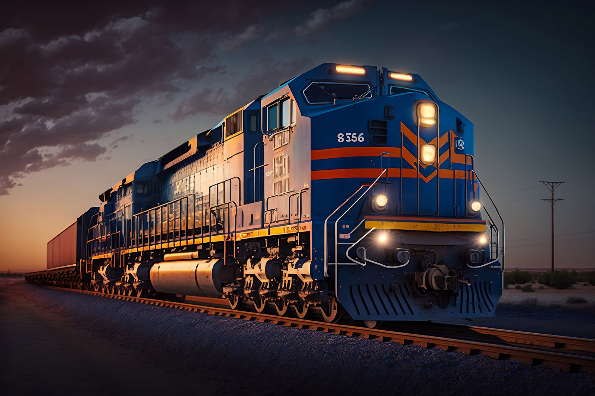

Frequently Asked Questions:
Why should Cincinnati continue to own its own railroad in 2023 and beyond?
In terms of managing an important asset, NS currently subleases it to other railway users, which brings in a good amount of money. If the city looses ownership of this asset, we'll loose transparency and the ability to control what's happening with it.
Now, when it comes to the financial side of things, there's a proposal to put the asset's value into an investment fund. The money this fund is expected to make is roughly the same as what the city tried to get in a new lease agreement, around $60 million compared to $65 million. The minimum payout from this fund is also similar to the current lease, about $25-26 million. However, there's a difference in how the costs are managed. In the fund, the costs are covered, but if the fund loses money and goes below a certain amount, there might not be any payments. This raises a valid question about the security and reliability of such an arrangement compared to the stability of owning and leasing the Railroad directly, emphasizing that wall street gambling may not offer a more secure return on investment than the current ownership model.
How can Cincinnati fund the development and maintenance of civic infrastructure without selling off civic infrastructure?
Cincinnati faces the challenge of funding the development and maintenance of civic infrastructure without resorting to the sale of civic assets. One potential solution lies in amending the current contract with NS. This amendment could empower the city to hold multiple leases, such as those with Amtrak, CSX, Pacific Union, among others, while simultaneously disallowing subleasing. This approach could generate a diversified revenue stream for the city, reducing its reliance on selling off critical assets. By fostering new lease agreements, Cincinnati could access development funds through a loan, with the additional funds raised through these new leases helping to service the loan. This strategy would allow the city to invest in infrastructure development without losing ownership of essential assets.
Furthermore, an alternative source of funding for Cincinnati's infrastructure could be the funds generated from the existing lease agreements. If there's potential to increase rent within the current lease framework, this could serve as a viable funding source for maintaining and improving existing infrastructure. By optimizing revenue from these leases, Cincinnati can simultaneously meet its financial needs for current projects while exploring opportunities for sustainable development without resorting to asset sales.
What is the city council's messaging about this sale? What are other important ways for residents to think about this sale?
The city council's messaging regarding this sale revolves around several key points. Firstly, they emphasize that the asset in question, the railroad, is considered outdated as a type of municipal infrastructure. Additionally, they stress that the sale is a crucial step in securing much-needed funding to improve the city's roads and bridges. This messaging aims to present the sale as a strategic move to modernize the city's infrastructure while addressing pressing fiscal concerns.
For residents, there are several important perspectives to consider beyond the city council's messaging. Firstly, they should recognize the railroad as a unique opportunity for both the city and its residents to have a say in shaping the railroad's future and harnessing its potential. Specific opportunities should be explored, such as the potential for passenger rail services that can enhance connectivity and transportation options. Moreover, residents should also be aware that selling the railroad to a corporation like Norfolk Southern could have negative consequences. Highlighting Norfolk Southern's record of environmental impact and safety concerns, including an 80 percent increase in accident rates over the last decade, should serve as a cautionary factor. Residents need to think critically about the long-term effects of such a sale on their community and its well-being.
